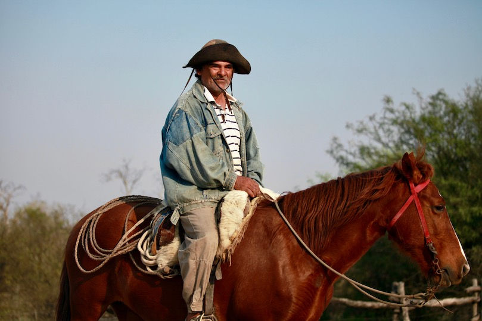
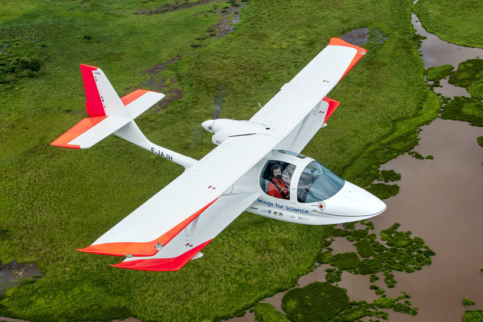
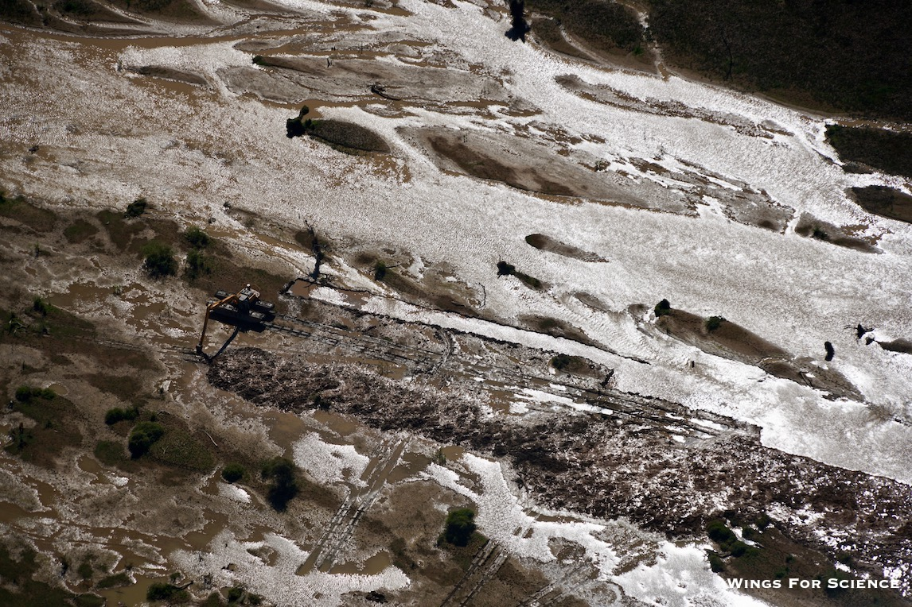
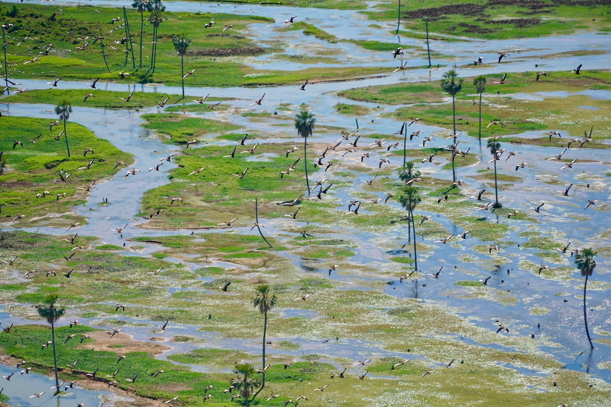
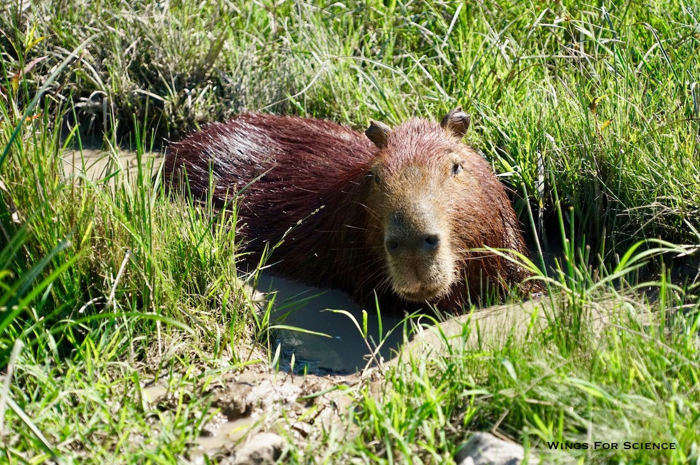
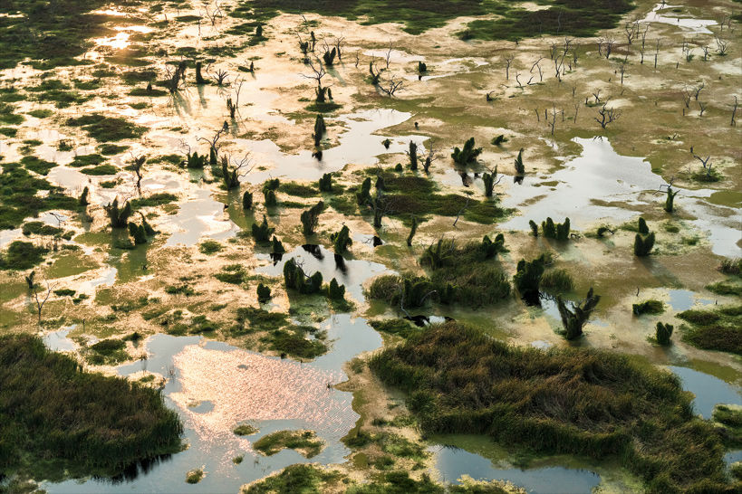
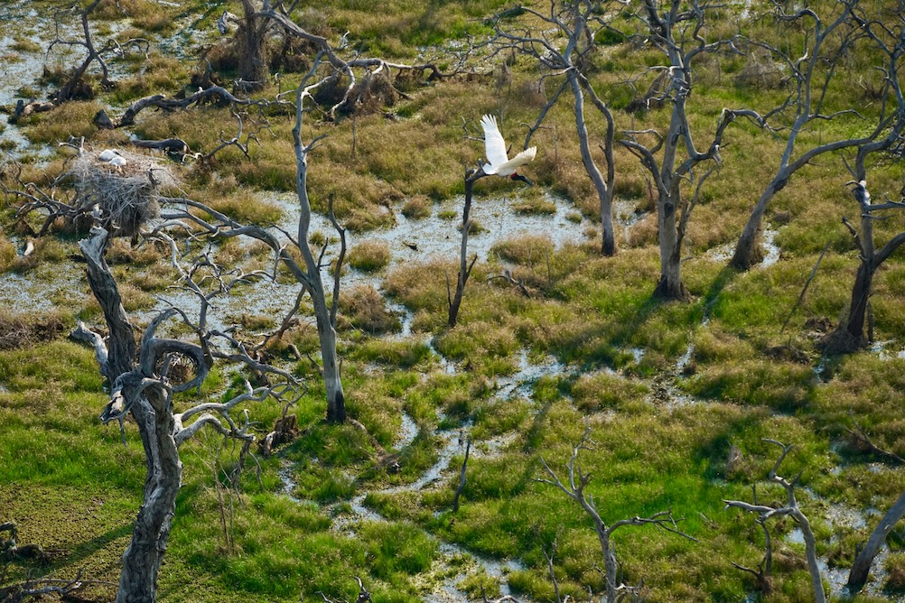
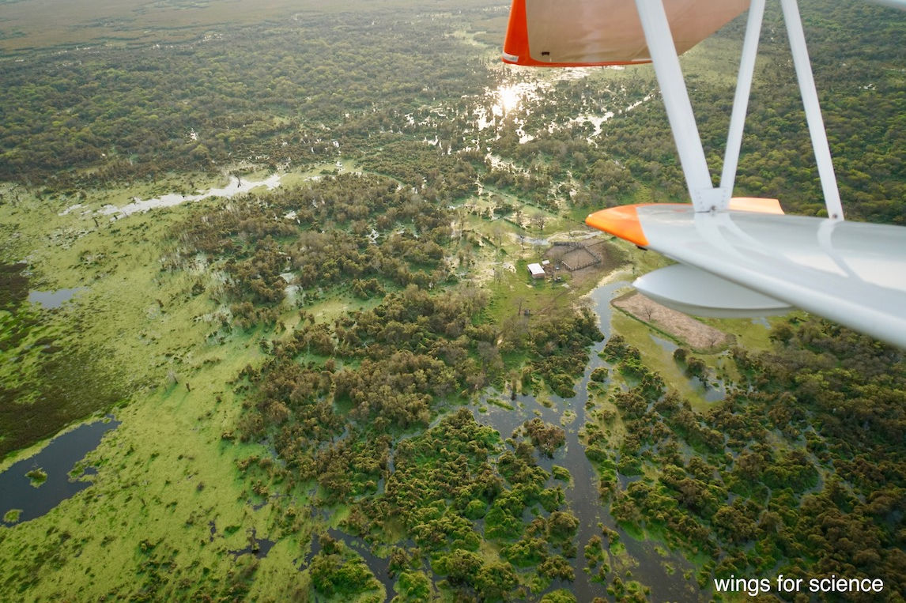
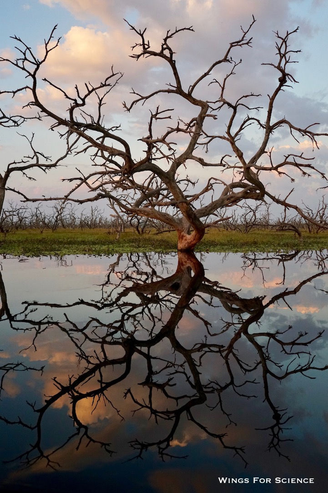

Voici quelques nouvelles fraiches de notre dernière mission, en collaboration avec l'ONG environnementale argentine Fundación ProYungas que nous appuyons actuellement dans la région de Formosa. Changement de climat, il fait maintenant 32 degrés en hiver ! L'objectif ? Protéger le fleuve Bermejo (pour sa couleur Vermeille) et le bassin Bañado La Estrella à la frontière entre l'Argentine, la Bolivie et le Paraguay, dont le cours varie constamment et offre ainsi une biodiversité unique au Monde et extrêmement riche et préservée : c'est bien simple, les animaux s'y rencontrent par milliers ! Caïmans, capybaras, des centaines de sortes d'oiseaux, serpents, etc. Amis juristes et avocats, la protection s'avère originale : il s'agit de créer ici le premier paysage fluvial protégé, à l'image des parcs naturels. Notre aide ? Des photos aériennes montrant le cours fluctuant du fleuve, et des zones de haute biodiversité qui devront recevoir un statut particulier.

Voici ci-dessous la traduction du rapport qu'a rendu Proyungas sur notre action. Vous aurez ainsi le récit de cette mission de la plume même du bénéficiaire :

« Depuis Août dernier Adrien et Clémentine, fondateurs de "Wings for Science" et pilotes de l’ultraléger amphibie LS Pétrel survolent le Bañado la Estrella (le Bain de l’Etoile) à Formosa. La base des opérations est installée à Las Lomitas, la « capitale du Bain de l’Etoile », d’où partiront les survols de la zone inondée afin d’étudier la distribution de l’eau, l’implantation des différentes activités humaines et l’état de la biodiversité.

Wings for science est né en 2008 en France, quand à la suite du survol d’un site archéologique requis par l’INRAP, Clementine et Adrien ont découvert un nouveau site archéologique. A cette occasion, ils ont pris conscience que le ciel offre un autre regard sur la problématique étudiée. De cet évènement, ils ont lancé un appel à projet et se sont fait progressivement connaître, jusqu’à ce que le bouche-à-oreilles fasse son oeuvre.

Cette année 2016, ils ont quitté Sao Paulo au Brésil avec leur nouvelle machine et ont parcouru la côte atlantique jusqu’à son point le plus méridional à Ushuaia, en Argentine. Après avoir réalisé des projets en Argentine et au Chili, ils ont atteint Tucumán à la demande de ProYungas, en collaboration avec l'Ambassade de France en Argentine. Ils poursuivront ensuite l'expédition et leur travail plus au Nord en collaborant à des projets environnementaux et sociaux.

Le premier vol avec Proyungas fut le survol de la route 28 jusqu’à l’altitude du Vertedero, qui a permis d’observer la forêt inondée et les “champales” qui se forment à partir des troncs d’arbres morts par inondation, ainsi que la communauté Pilagá (amérindienne) "Campo del Cielo".

Lors du deuxième vol, ils sont entrés dans le Bañado la Estrella et plus particulièrement dans la zone de Fortin Soledad (« Solitude ») où ils ont survolé et photographié des palmiers de taille gigantesque aux abords des zones de population. La diversité des oiseaux et de la végétation qui peut être observés depuis l’ULM des Ailes pour la Science, souligne l'importance de cette zone humide pour la conservation de la biodiversité dans le Gran Chaco Americano.

Au vol suivant, ils ont survolés la communauté Pilagá "El Descanso" sur la rive nord du Bañado. Lors d’un vol commandé par Adrien avec comme passager Sebastien Maliza de l’ONG Proyungas, ils ont effectué ce qui est sans doute le tout premier amerrissage d'un hydravion dans les eaux du Bañado.

Les vols continuèrent au dessus de l’eau du Bañado, dans toute la zone étendue jusqu’à Ingeniero Juárez. A la fin des vols nous avons obtenu une carte complète de Bañado et ses environs, qui vont nous permettre de valoriser cette zone humide étonnante, en accord avec le Gouvernement qui a accepté de promouvoir cette zone environnementale. »

Revue de presse :

Sous ce lien, vous pouvez lire une interview détaillée (en espagnol) avec des jolies photos qui racontent en détail cette mission. Ci-dessous, vous trouverez une courte vidéo réalisée par la TV locale "La Gaceta" (voir l'article en ligne ici).
